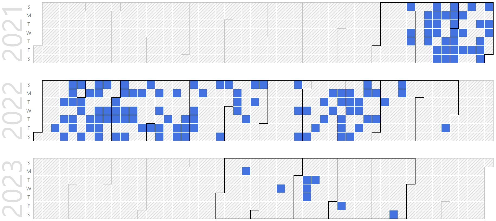

Juneseo Chang (Visiting Researcher @ SNU)
Visiting Researcher, AI Software Integrator |
Repository Commit History
|  |
Introduction
Full Bio Sketch
Mr. Chang is currently doing his undergraduate degree in Computer Science and Engineering at Seoul National University, Seoul, Republic of Korea. His research interests include dependable and resilient system design using machine learning approaches. He has also developed a low-power, light-weighted, high-performance machine learning algorithm for human activity data recognition. He is a recipient of the Presidential Science Scholarship funded by the Korea Student Aid Foundation (KOSAF). He was a visiting researcher at the AI-SoC lab as a part of the Daegu Science High School research program from March to November 2018.
Research Topic

Smart homes assist users by providing convenient services from activity classification with the help of ML technology. However, most conventional high-performance ML algorithms require relatively high power consumption and memory usage due to their complex structure for smart homes’ low-performance hardware. Therefore, we propose a low-power, memory-efficient, high-speed ML algorithm for smart home activity data classification. We propose a method for comprehending smart home activity data as image data, hence using the MNIST dataset as a substitute for real-world activity data. The proposed ML algorithm consists of data preprocessing, training, and classification. In data preprocessing, training data of the same label are grouped into further detailed clusters. The training process generates hyperplanes by accumulating and thresholding from each cluster of preprocessed data. Finally, the classification process classifies input data by calculating the similarity between the input data and each hyperplane using the bitwise-operation-based error function.
Publications
Journal Publications (KCI 1, SCI 1)
Juneseo Chang Boguk Kim, Changil Mun, Dokyun Lee, Junho Kwak, Daejin Park, and Yoosoo Jeong. Efficient Hyperplane Generation Techniques for Human Activity Classification in Multiple-Event Sensors based Smart Home (KCI) IEMEK Journal of Embedded Systems and Applications, 14(5):277-286, 2019.
Juneseo Chang, Myeongjin Kang, and Daejin Park. Low-Power On-Chip Implementation of Enhanced SVM Algorithm for Sensors Fusion-based Activity Classification in Lightweighted Edge Devices (SCI) Electronics, 11(1):139-159, 2022.
Juneseo Chang, Sejong Oh, and Daejin Park. Accuracy-Area Efficient Online Fault Detection of On-chip Runtime Bitflip for Robust Neural Network Software-Embedded Microcontrollers (SCI) (Under Revision) IEEE Transactions on Dependable and Secure Computing, 2023.
Conference Publications (Intl. 3)
Juneseo Chang, Myeongjin Kang, and Daejin Park. Accelerated SVM Algorithm for Sensors Fusion-Based Activity Classification in Lightweighted Edge Devices In IEEE 40th International Conference on Consumer Electronics, 2022.
Juneseo Chang and Daejin Park, Accuracy-Area Efficient Online Fault Detection for Robust Neural Network Software-Embedded Microcontrollers In The ACM SIGBED International Conference on Embedded Software (EMSOFT), 2022.
Juneseo Chang and Daejin Park. Searching Optimal Compiler Optimization Passes Sequence for Reducing Runtime Memory Profile using Ensemble Reinforcement Learning In ACM International Conference on Embeeded Software (EMSOFT 2023), 2023.
Participation in International Conference
IEEE ICCE 2022, Las Vegas, USA
IEEE/ACM EMSOFT 2022, Shanghai, China
IEEE/ACM EMSOFT 2023, Hamburg, Germany